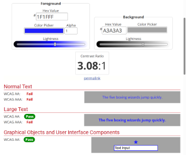
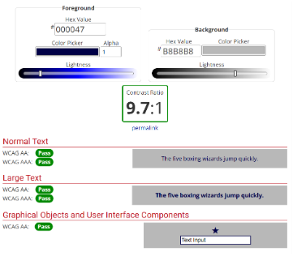

1. Combinación de colores
- Tus compañeros tienen dudas sobre la combinación de color más accesible entre las siguientes opciones:
- Color de texto: #1F1FFF y color de fondo: #A3A3A3
- Color de texto: #000047 y color de fondo: #B8B8B8
Solución:


- La segunda opción (#000047 sobre #B8B8B8) es la más accesible, ya que cumple con el criterio AA para Texto Normal y AAA para Texto Grande, lo cual es el mínimo recomendado (AA).